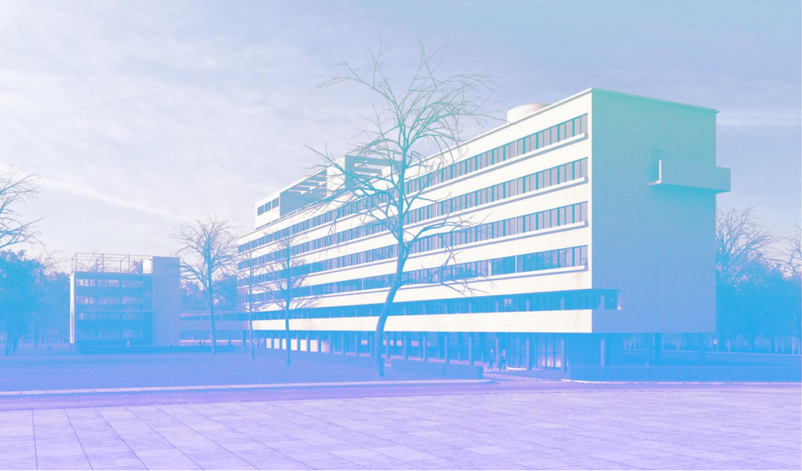

Наглядный пример,
чтобы учиться веб-вёрстке
Разработан для изучения основ веб-вёрстки, языка гипертекстовой разметки HTML и каскадных таблиц стилей CSS

Разработан для изучения основ веб-вёрстки, языка гипертекстовой разметки HTML и каскадных таблиц стилей CSS
Чтобы начать изучать веб-вёрстку на этом проекте, не требуется каких-то специальных знаний, кроме базового умения пользоваться компьютером

Обучение приближено к работе в реальной жизни, работа разбита на этапы от типографики, создания меню и использования эффектов, до адаптации под мобильные устройства и использования JavaScript скриптов


Вы можете обучаться самостоятельно по исходному коду проекта, выложенному на GitHub, или записаться на курс «Основы веб-вёрстки» в Школе Дизайна НИУ ВШЭ